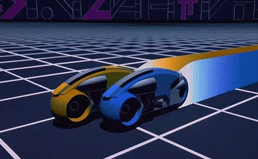
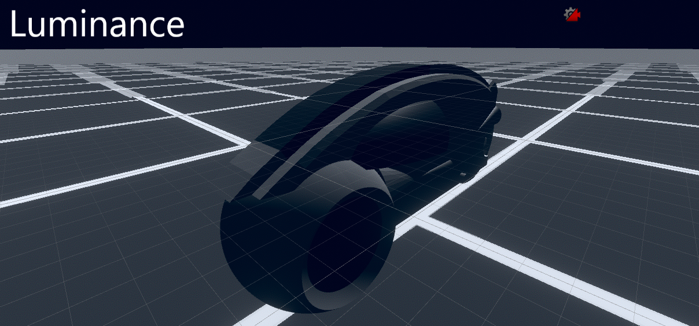
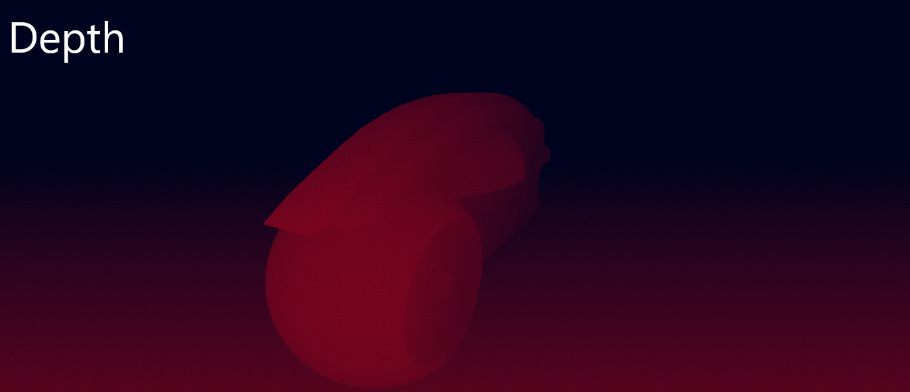
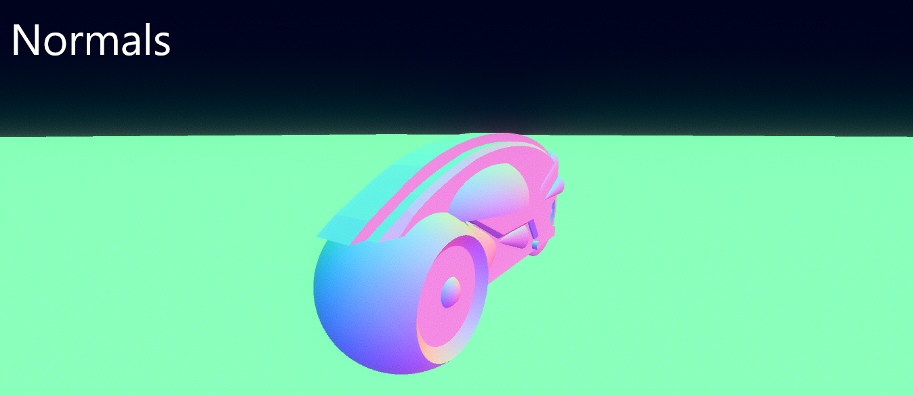
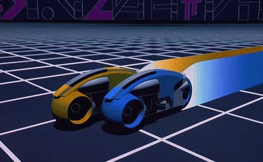
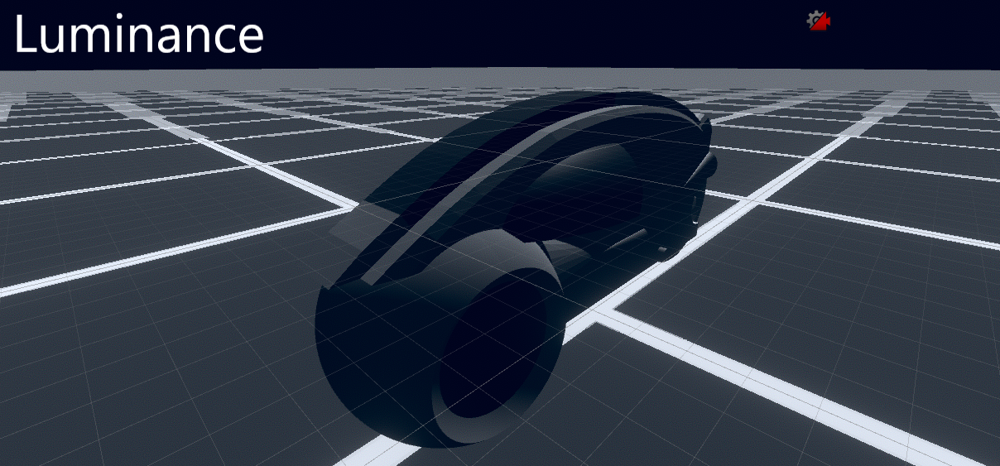
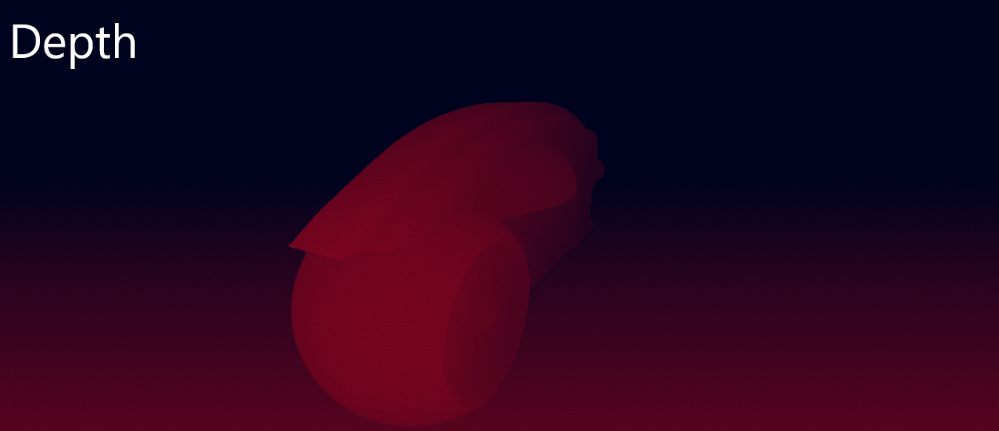
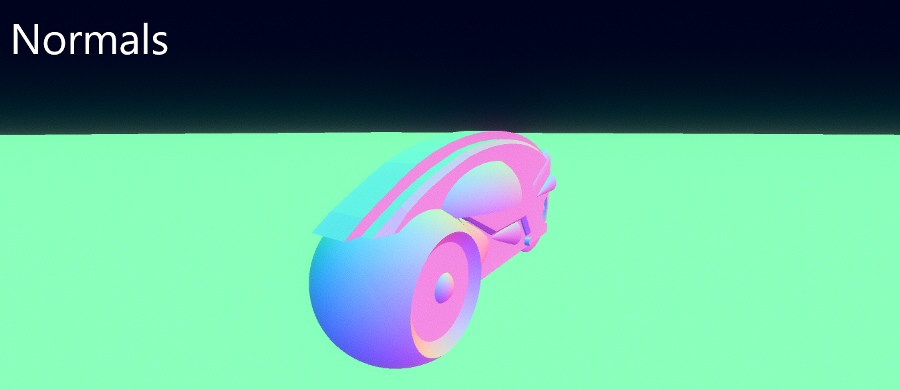

Tron Shader
This project was made as a quick way to practice my HLSL knowledge, and with Tron 1982 fresh in my mind, I modelled a light cycle from the movie in Blender. I decided that the behaviour of the lighting in Tron was interesting enough to make an attempt to recreate as a way to practice HLSL.
Below is a reference to Tron (c. Disney 1982) 
Notice, in areas with dark lighting or dark surroundings, a white outline is present. While it is possible that this was hand drawn for the movie, I decide to think up an algorithm for it to be automated.
The shader uses a combination of a luminance, depth and normal textures to observe each pixel and evaluate its surroundings and luminance as to whether that pixel should be overwritten.
  
The result is a shader that I feel closely resembles the reference video/gif.
Below is a reference to Tron (c. Disney 1982) 
Notice, in areas with dark lighting or dark surroundings, a white outline is present. While it is possible that this was hand drawn for the movie, I decide to think up an algorithm for it to be automated.
The shader uses a combination of a luminance, depth and normal textures to observe each pixel and evaluate its surroundings and luminance as to whether that pixel should be overwritten.
  
The result is a shader that I feel closely resembles the reference video/gif.